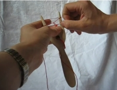

Haarukkanyöriohjeita
Etusivu
Haarukkanyöriohjeita
Galleria
På svenska
In English
Videoita
Kotisivuja
Ladattavia ohjeita

Videoita
Pipsa Panulan laaja ohje
Haarukkanyörin tekeminen pitäen lankaa vasemmassa kädessä
Haarukkanyörin tekeminen lanka oikeassa kädessä
Kotisivuja
How to Lucet
Basic Instructions for Using a Double Lucet
Ladattavia ohjeita
Haarukkanyörin perusohje (tulostettava pdf)